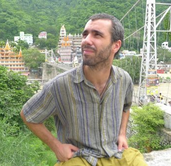

Established Researcher of Computational Systems Biology and Data Science
Life Science Department, Barcelona supercomputing Center

I am a researcher in life sciences with expertise in systems biology, bioinformatics, and data analysis. My work integrates computational modeling with experimental data to understand biological mechanisms and cell behavior.
More recently, I have explored geo-spatial analysis and population mobility, investigating their impact on urban health and epidemic dynamics.
I also have extensive experience as a software developer, building data-driven models and computational tools to support research in systems biology, epidemiology, and health policy.